DIGITAL / 04
City Renewal Authority — Rebranding Proposal
- WORK
- Speculative government-agency rebrand
- YEAR
- 2025
- MEDIUM
- Identity system · Generative graphics · Public signage mockups · Brand documentation
- CONTEXT
- ANU DESN2002 · Independent university group assignment
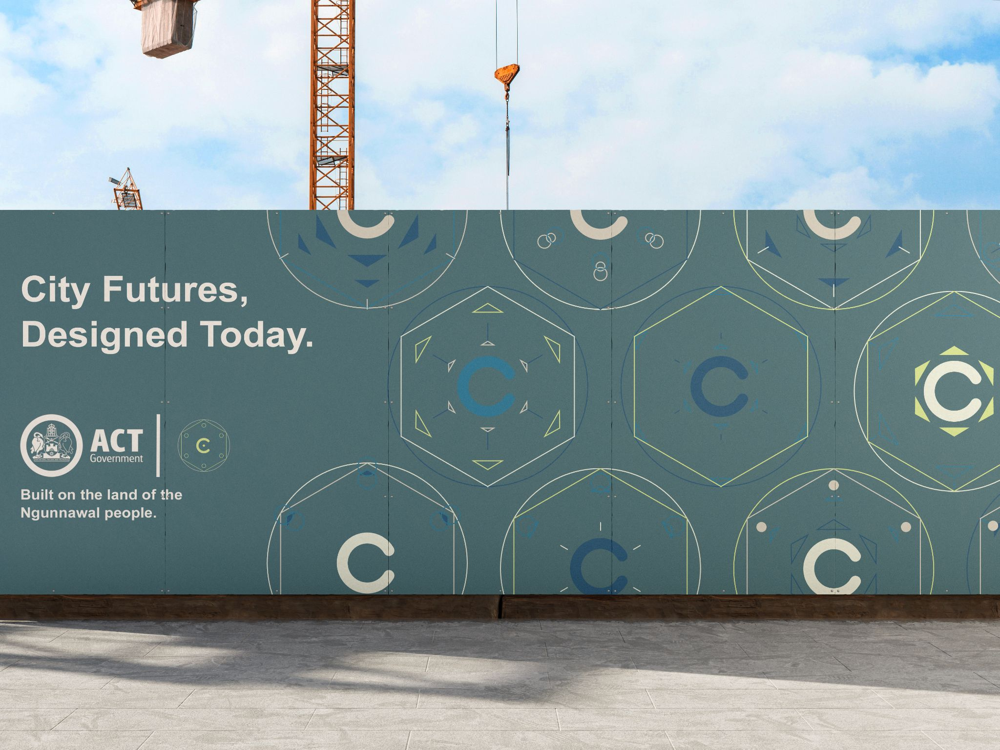
Overview
This independent group assignment developed an alternative visual identity proposal for Canberra’s City Renewal Authority (CRA). The project investigated how geometry, urban planning and a flexible graphic system could communicate the agency’s work across different city locations and projects.
Our proposal adopted the line “City Futures, Designed Today.” It was designed for and presented in class only; the City Renewal Authority was not a commissioning client and did not receive or adopt the work.
Design Brief
Reimagine the agency’s brand as a more consistent, identifiable visual system while retaining an appropriate connection with Canberra and the ACT Government context.
The proposal drew on Canberra’s planned geometry and City Hill as conceptual reference points, combining modern Swiss/Bauhaus-inspired presentation with variations for different places and types of urban renewal.
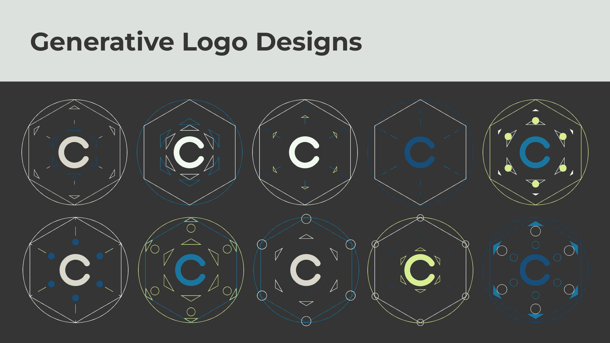
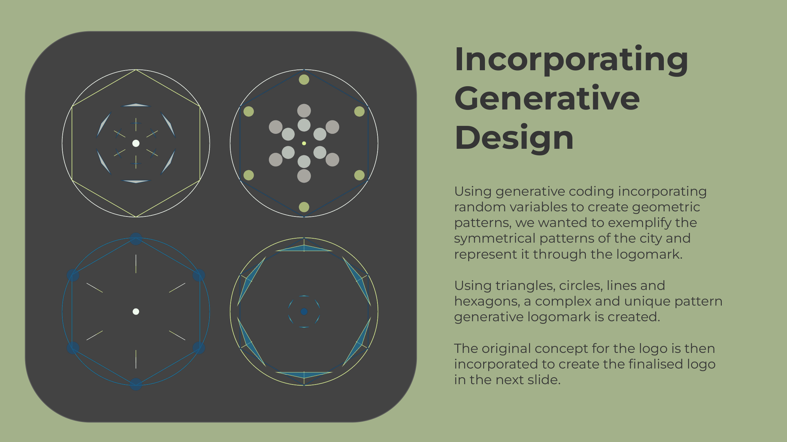
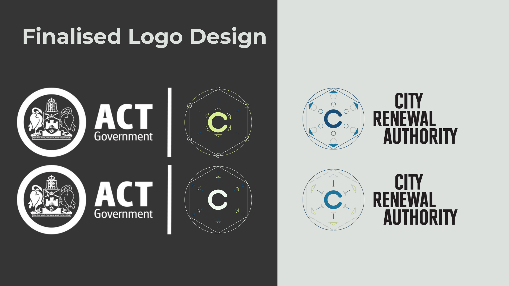
Process
As a group we reviewed existing CRA communications and explored how the radial patterns of Canberra’s city layout could inform a new identity. The proposal used geometric forms, contemporary typography and a palette connecting different kinds of renewal projects.
The visual system incorporated generative pattern explorations, changing shapes for locations and colours for project categories. I collaborated across the digital graphic designs, identity applications, mockups, documentation and presentation; the logo itself was designed by another group member.
We tested the proposed system through poster studies, construction signage, street advertising, hoarding and stationery mockups, considering how the identity could stay recognisable while varying across its applications.
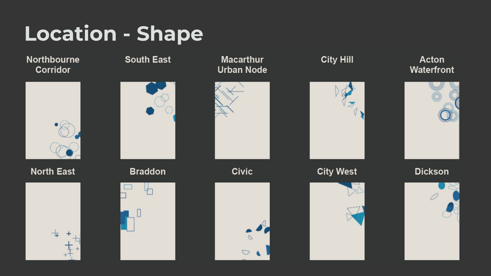
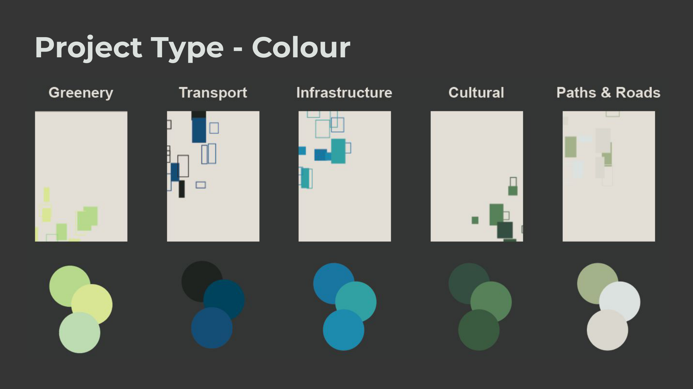
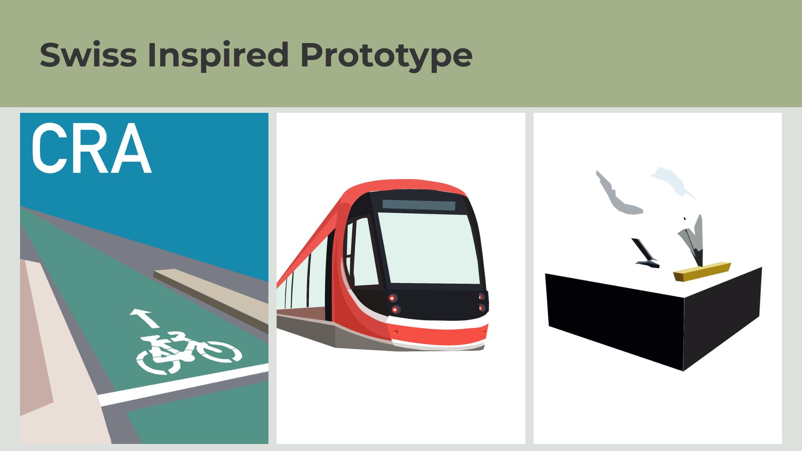
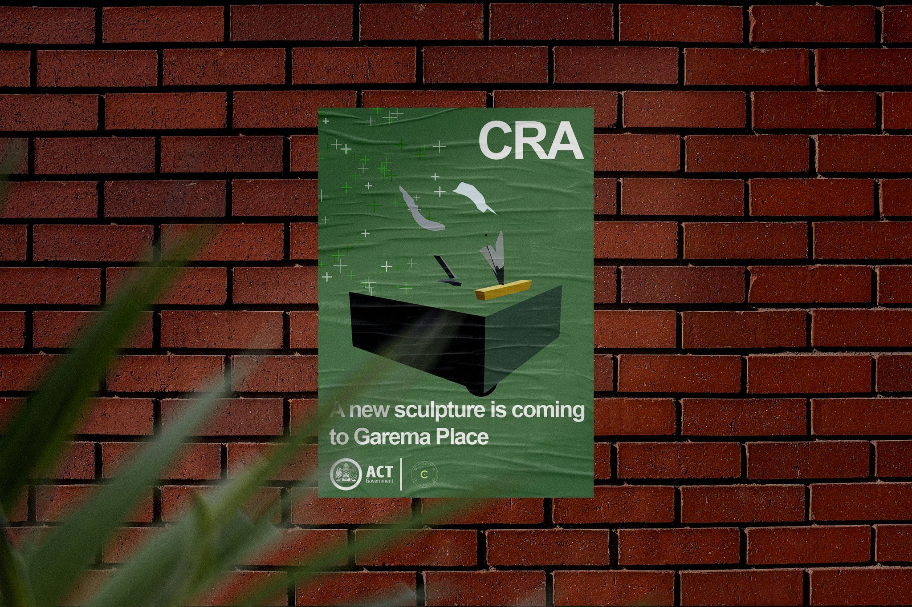
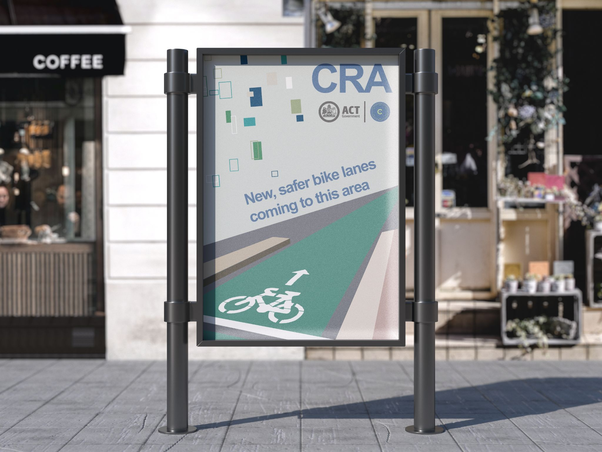
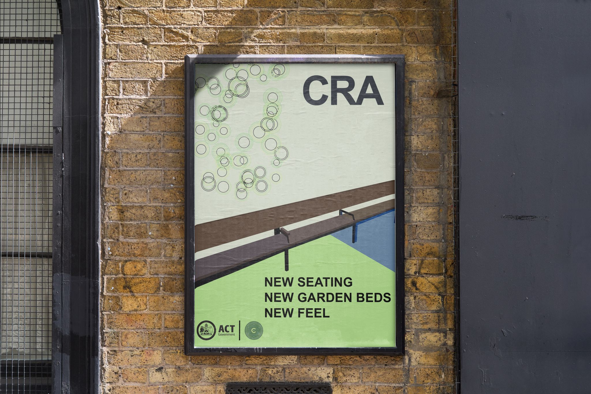
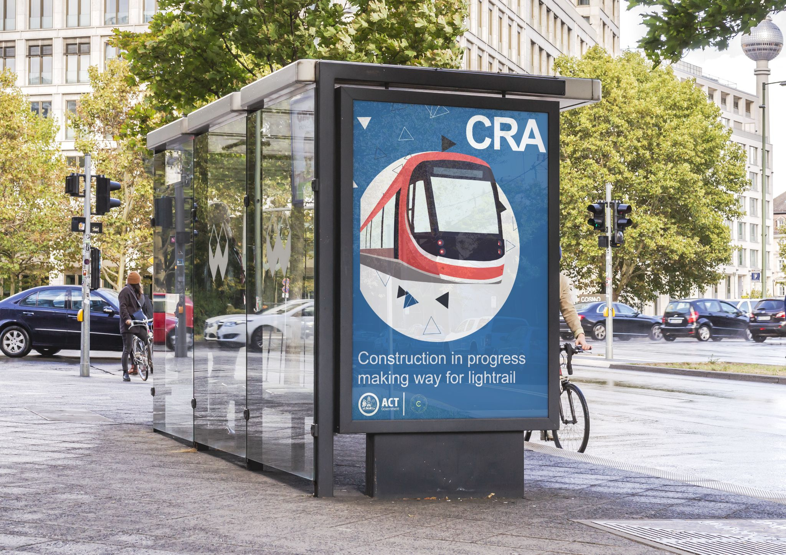
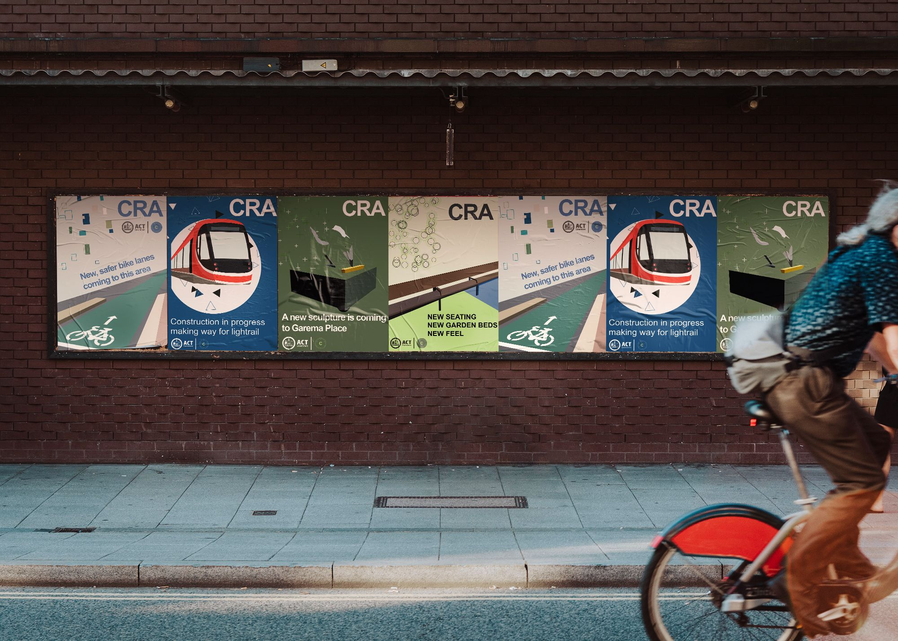
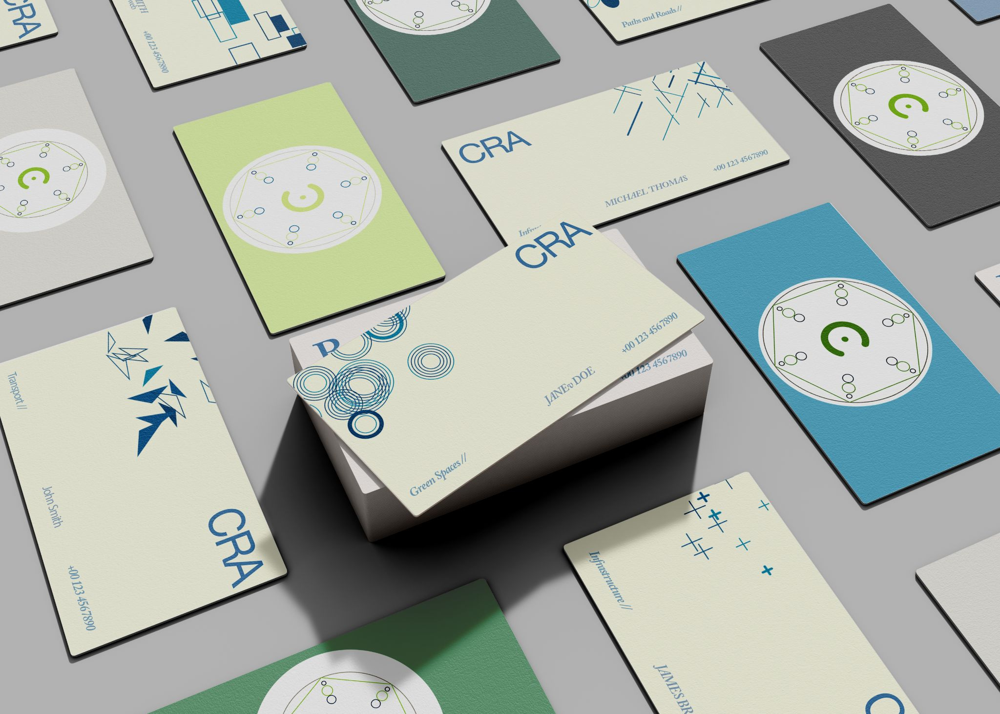
Outcome
The group produced a complete classroom rebranding proposal consisting of a visual identity system, a proposed logo, adaptable graphics and a range of environmental and printed applications.
The concept was presented in class as an academic exploration. It was neither commissioned by nor presented to the CRA, and the agency did not implement the proposed identity.